Tulsa, OK
1970 Chevy Pickup
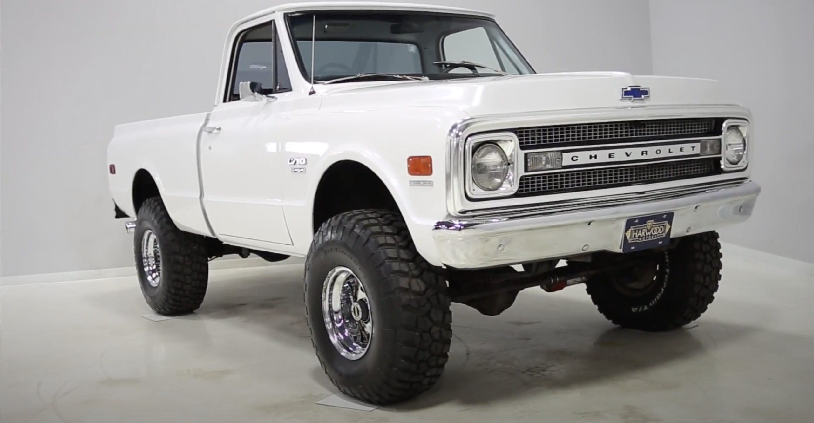Years Owned: 1982-1983
This 1970 Chevy short bed pickup truck was the first car I purchased. The one pictured here isn't my truck but it's the closest that I could find. Mine wasn't lifted like this one but other than that this is what it looked like. I saved my money and paid a friend $800 cash for this classic truck that had three on the tree.
1969 Malibu Chevelle
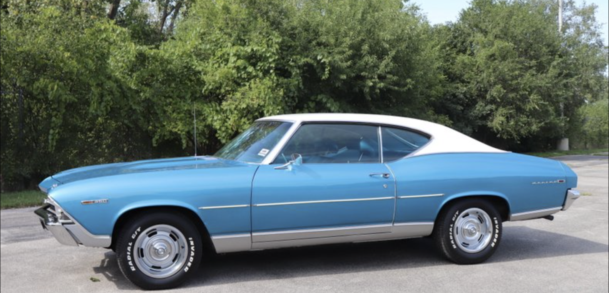
Years Owned: 1983-1985
While still in High School I traded my Chevy truck for a 1969 Chevy Malibu Chevelle. This car had a 307 small block with a two-speed powerglide transmission. According to the dealership I traded with this car was driven by a little old lady back and forth to church. When I got it in 1983 there were only 80k miles on it, so maybe a little old lady really did own it. Long story short but I got tired of the constant repairs so I gave the car to my younger brother and bought a sweet 1981 Cutlass Supreme."
1981 Cutlass Supreme
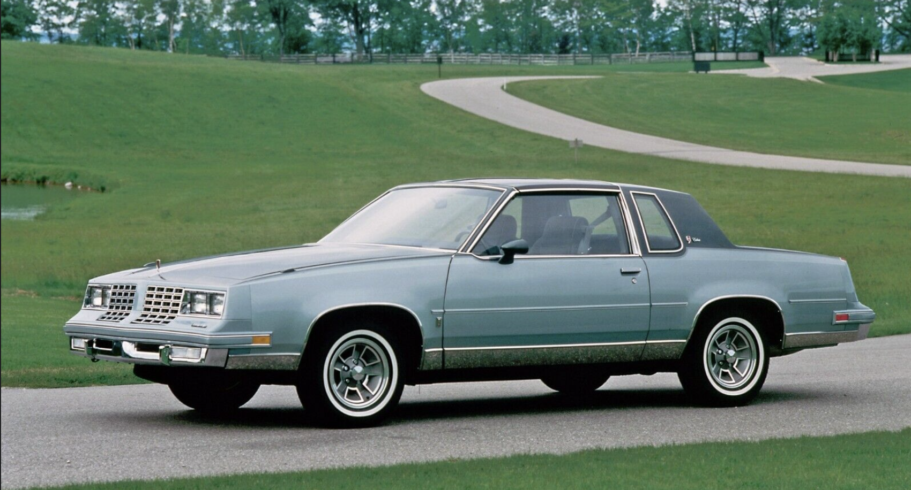
Years Owned: 1985-1988
Let me start by saying that I loved this car and so far my car history looks pretty good for a dumb guy. I drove this car during my party years in Tulsa and it was great. Plenty of room to take my friends along and with power windows and air i was a pretty big deal back then. Unfortunately the next several years are the 'Dark Years' where I made some questionable decisions with my vehicles.
1989 Hyundai Excel
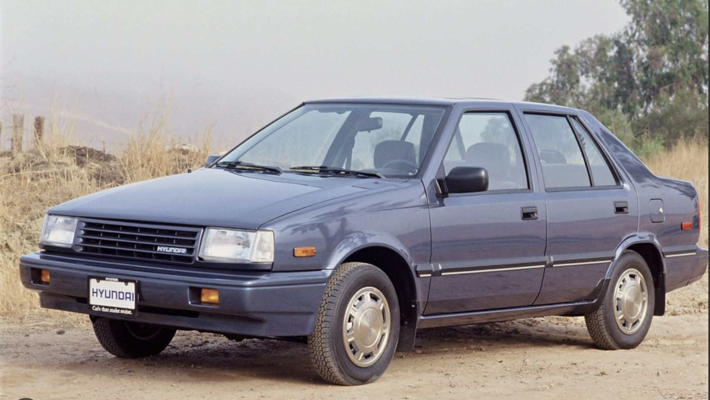
Years Owned: 1989-1992
This car was horrible, completely underpowered and looked like a trapper keeper but it was new and came with a 10 year warranty. Ironically enough, the engine blew up right after I traded it in for my next car, a 1992 Mazda MX6.
Omaha, NE
1987 Isuzu Truck
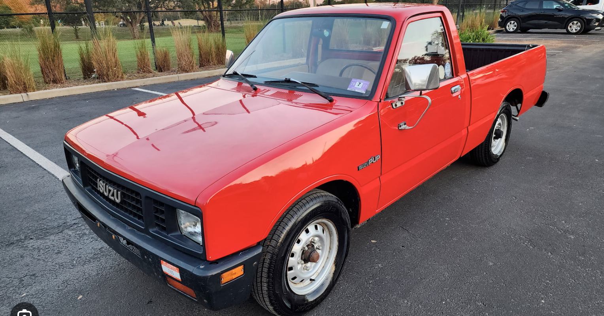
Years Owned: 1987-1990
I bought this compact truck for fuel efficiancy and the ability to haul stuff. If I remember correctly it was a stick shift, didn't have air and the windows were crank. I think it cost under $5k
1990 Geo Tracker
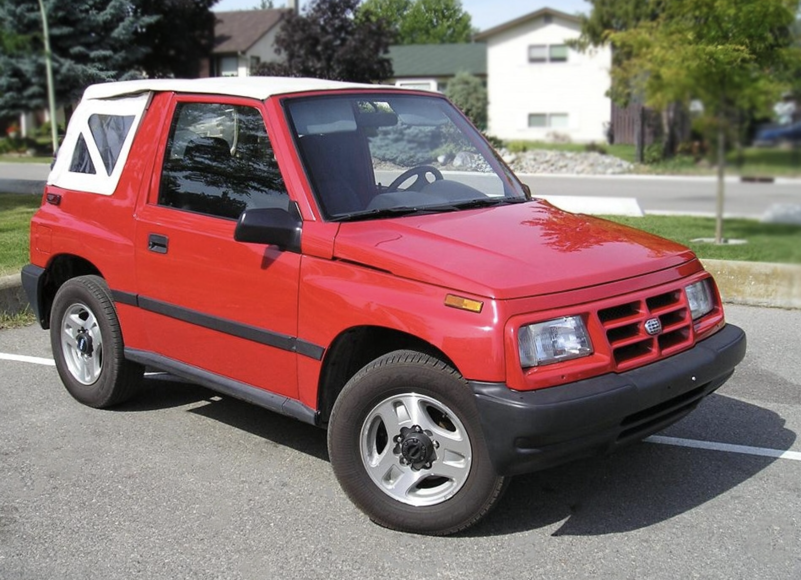
Years Owned: 1990-1995
We were looking for a convertible Jeep as we were into camping and outdoor type of activities back then. I couldn't afford a Jeep at the time and they were practically giving these things away, so we bought it. It was rough riding but we had fun with it.
1992 Mazda MX6
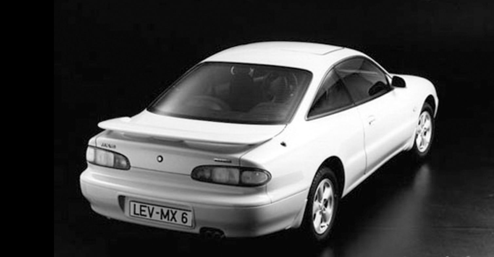
Years Owned: 1992-1994
I loved this car! Great style, snappy engine and really fun to drive. I got a speeding ticket while racing a friend and his Mustang. I won.
St Charles, MO
1996 Ford Explorer
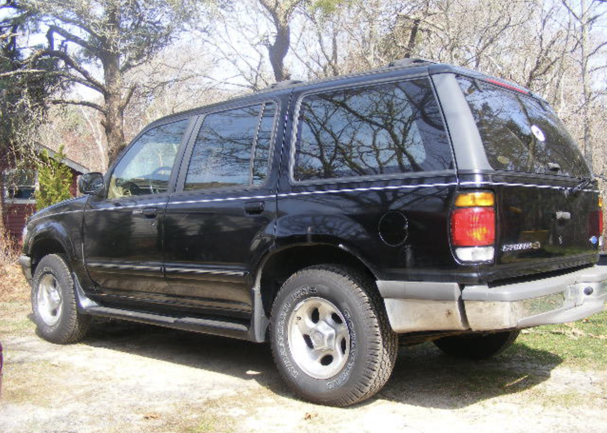
Years Owned: 1997-1999
I had a couple of dogs and we did a bunch of driving back and forth between Omaha and St Louis and it was nice having a place for the dogs to ride without having them all over our laps. I would fold the seats down, put a bunch of pillows and blankets down and they would sleep on top of everything. Spoiled little Boston Terriers...
Paducah, KY
1996 Ford Explorer
Years Owned: 1997-1999
I had this truck for several years while we moved around several times between 1995-1998. The SUV held up well and gave us plenty of room to travel with.
Memphis, TN
1996 VW Cabrio
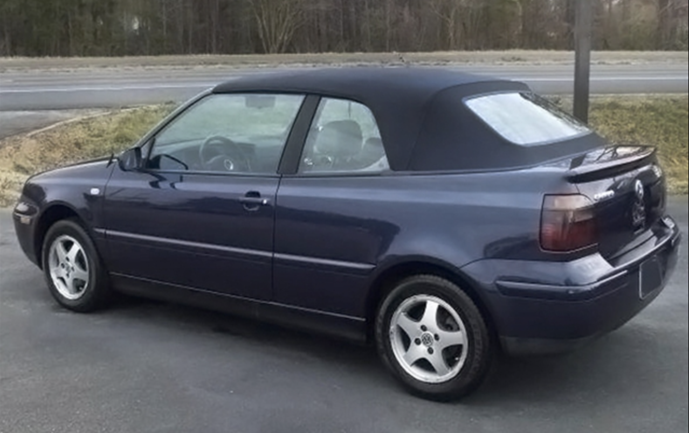
Years Owned: 1997-1999
My wife wanted a convertible and after doing a bunch of research, we decided the VW Cabrio was the best option for us. We really liked the car and replaced the 1996 version with a 2000 version.
St Louis, MO
1996 Ford Explorer
Years Owned: 1997-1999
We had the Explorer for a few months when we moved back to St Louis from Memphis but traded up to the Expedition shortly after we settled in.
2000 Jeep Cherokee
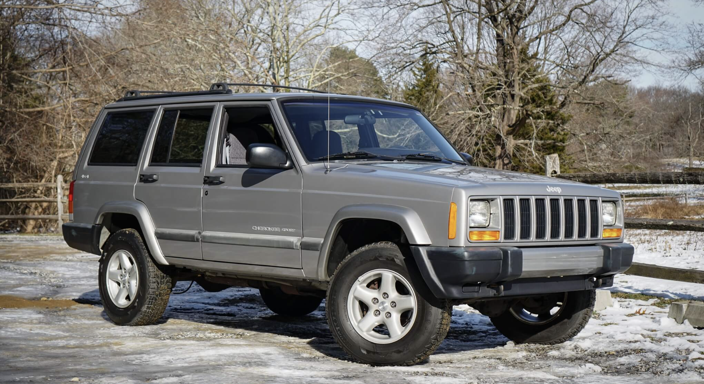
Years Owned: 2000-2003
Leased a Jeep Cherokee after the 96 Explorer but had all kinds of trouble with the transmission and after less than 12 months i turned it in as a lemon and bought a 1998 Expedition.
1998 Ford Expedition
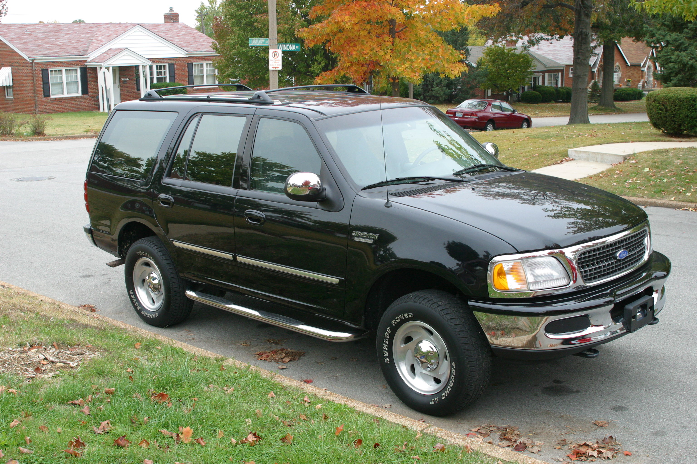
Years Owned: 2000-2004
Once the Jeep Cherokee died, I decided to go back Ford and bought the larger Expedition. This was a great SUV that I had for several years. Once we moved out Ofallon I needed a pickup and ended up buying the Chevy Z71.
2000 VW Cabrio
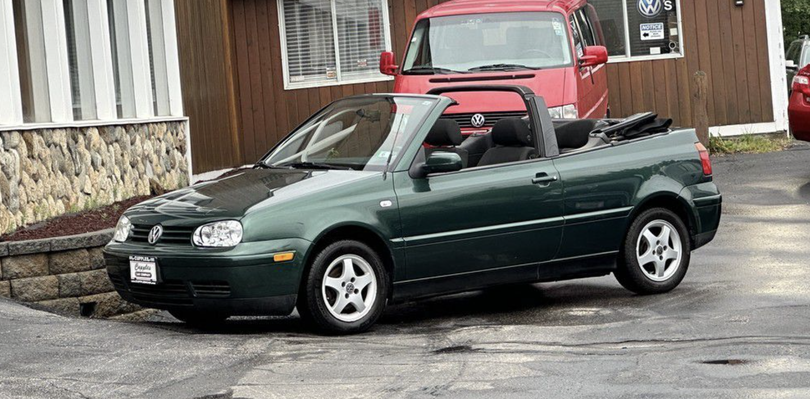
Years Owned: 2000-2005
This was our second VW Cabrio and she drove this until 2006 when we bought the Mini Cooper convertible. I think this model had an automatic top which was a nice upgrade.
1989 Jeep Grand Wagoneer
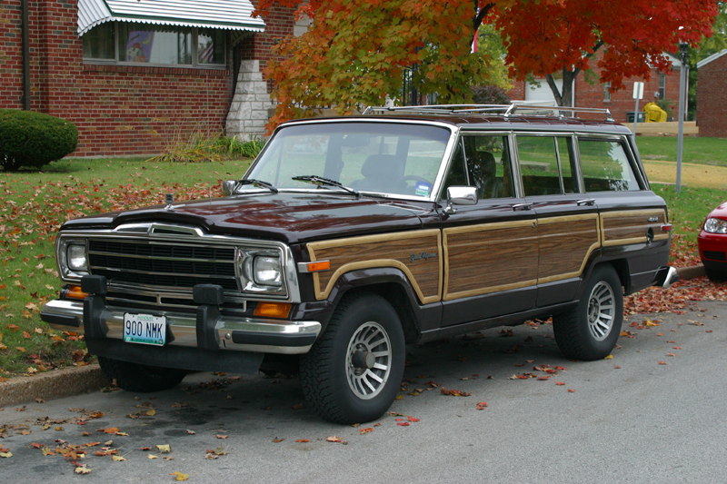
Years Owned: 2000-2003
This has been my favorite vehicle and it's not even close. I love the big and boxy look and these Grand Wagoneers are loaded. A work friends mother had this Wagoneer just sitting around and not being used. I had always wanted one and they sold it to me for $5k. It only had 80k miles on it in 2000 when I bought it. I wish I still had the vehicle but at the time I didn't have anywhere to store it and since it wasn't my daily driver it sat around too much. I miss this vehicle everyday. These things are crazy hard to find in good shape and I wish I still had it. Sad times...
Ofallon, MO
2004 Kubota tractor
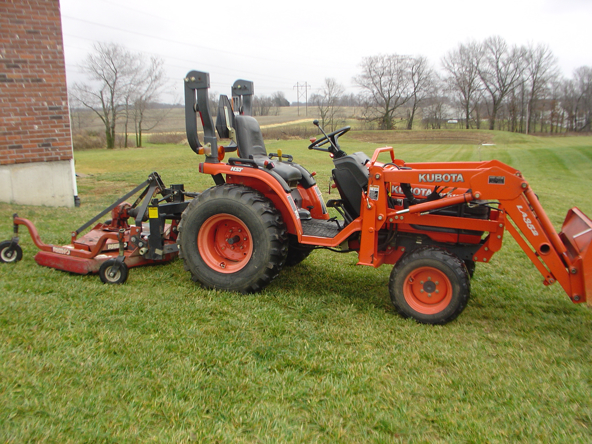
Years Owned: 2004-2014
Move to the country and buy a tractor. Why not? We moved from the city to 3.5 acres in the north Ofallon/St Paul area. It was a new house and it needed all kinds of yard work. Mowing 3 acres takes about 3 hours with a tractor and finish mower and after almost 10 years I finally sold it and bought a Zero turn mower and ATV. Tractors really hold their value and I sold it for almost what I paid for it, which was great.
2005 Chevy Z71 Pickup
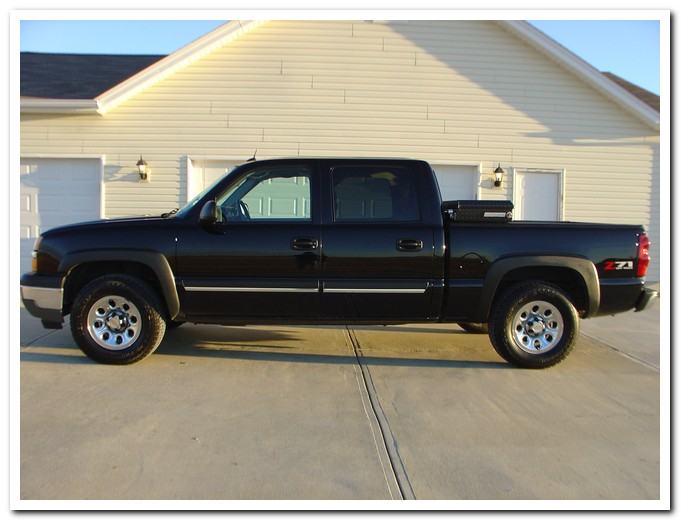
Years Owned: 2005-2008
This is the first full size pickup that I owned since my very first truck way back in 1982. This truck was loaded, drove like a car and made me realize that a truck wasn't just a work vehicle anymore. I also realized that I would always have a truck. I changed jobs which required a bunch of driving so I bought a sedan for fuel efficiancy and almost immediatley regretted not having a truck.
2006 Mini Cooper S Convertible
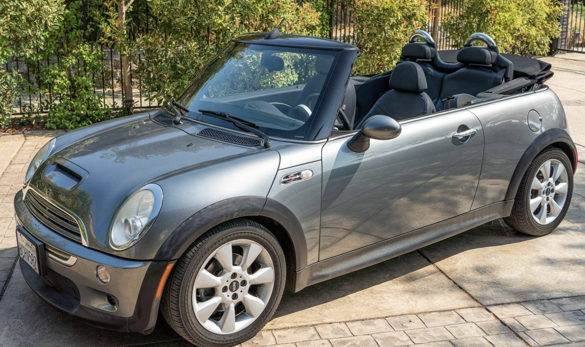
Years Owned: 2006-2018
This was a crazy fun car to drive. Handled like a go-cart and with the SuperCharger it was as fast as you needed it to be. So much accelaration and more room than you think. She drove this car for 280k miles and we only did minor repairs. What a great car.
2006 Jeep Commander

Years Owned: 2008-2012
I sold the truck and bought the Jeep Commander. I missed the Grand Wagoneer and the Commander was Jeeps attempt to replace it. It was a nice suv but I there were some things I didn't like about it and I needed a sedan so I sold it and bought the Kia Optima
2008 Harley Road King Classic
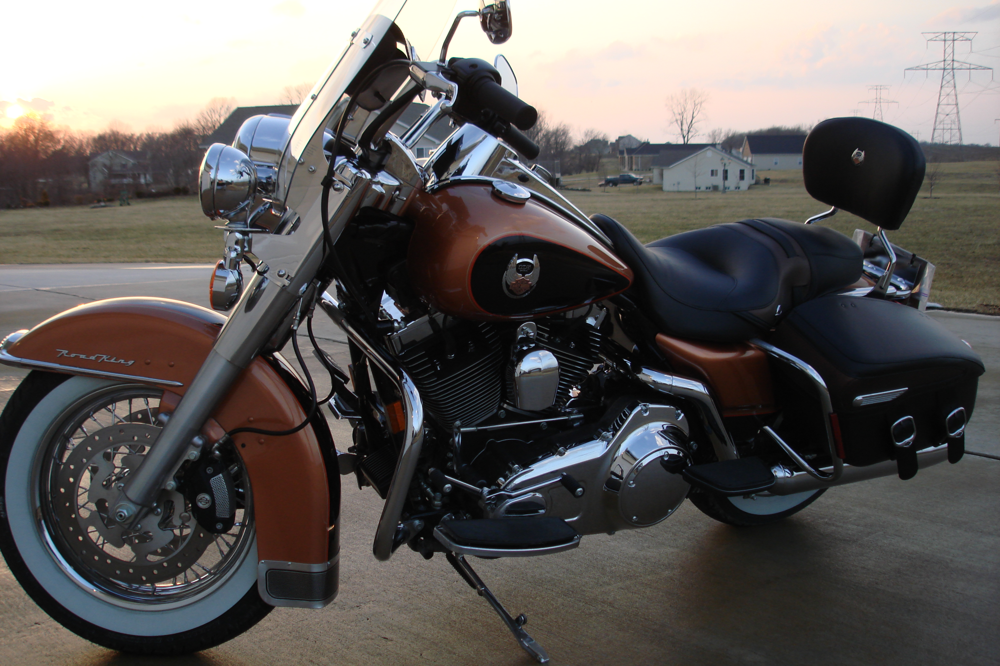
Years Owned: 2008-Current
I had wanted a motorcycle for 15 years or so but I always had an excuse to not buy one. When my mother passed away unexpectedly in early 2008, I dicided that life was too short and finally bought the bike. I rented several different models before settling on the Road King Classic and still ride it today, some 15 years later. It's been a great bike and we've taken many road trips over the years.
2012 Kia Optima SX
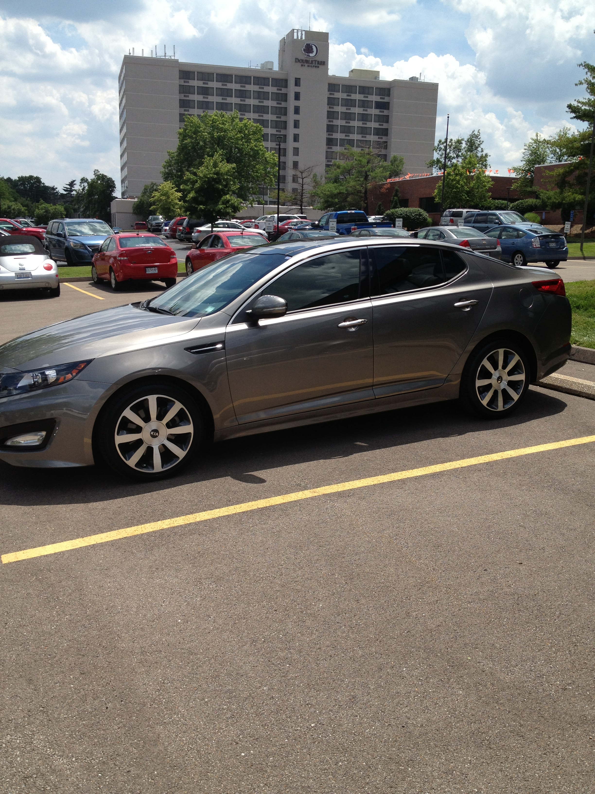
Years Owned: 2013-2015
This was a great car and an even better value. I would absolutely buy another Kia vehicle (if they had a truck or convertible). This was luxury far beyond its price point. Is sold it because I wanted/needed a truck
2014 Ram Big Horn
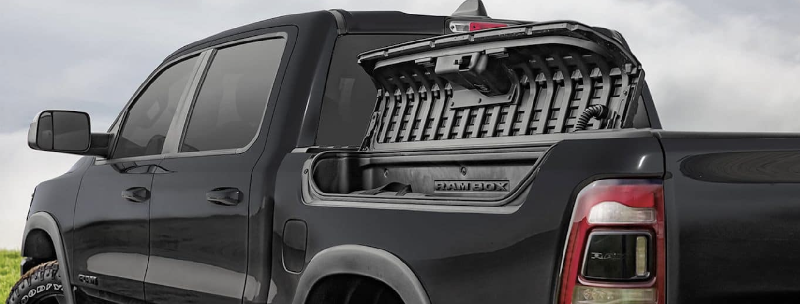
Years Owned: 2016-2020
I like the way the Rams look and the interior is laid out the best in my opinion. This model had Ram boxes which are the side boxes where you can store tools and stuff without taking up bed space. The only downside to this truck is that it was a Quad cab and not the Crew cab. Other than that, I would probably still have it. I found a great deal on a 2019 Crew Cab and traded up to it.
Lake St Louis, MO
2019 Ram Big Horn
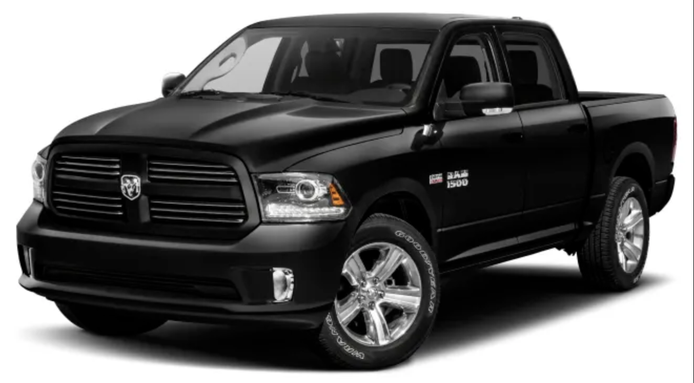
Years Owned: 2020-Current
My daily driver and an overall great truck. Rides great, plenty of power and it's everything I'm looking for in a truck. The only thing it doesn't have is the Ram boxes which are pretty hard to find in a used truck. I plan on keeping this truck for quite sometime and unless I run across a newer truck with Ram boxes I should have this truck for many years to come.